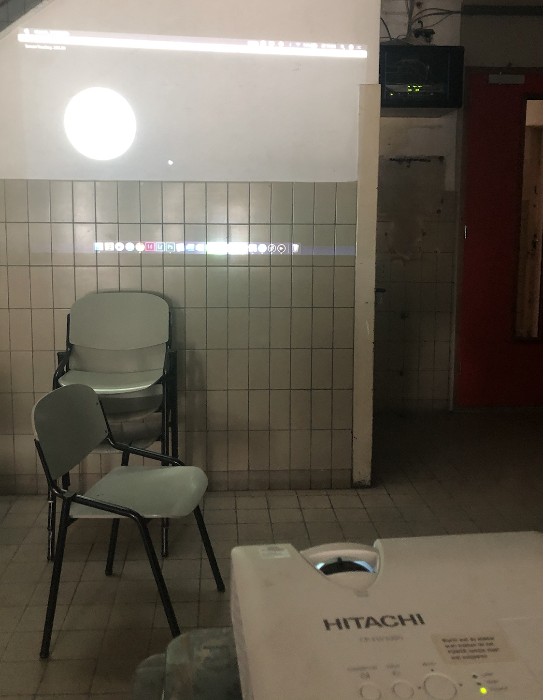
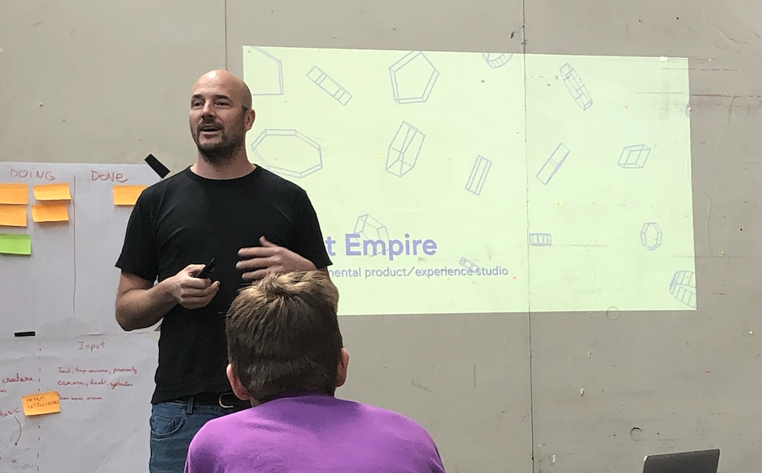
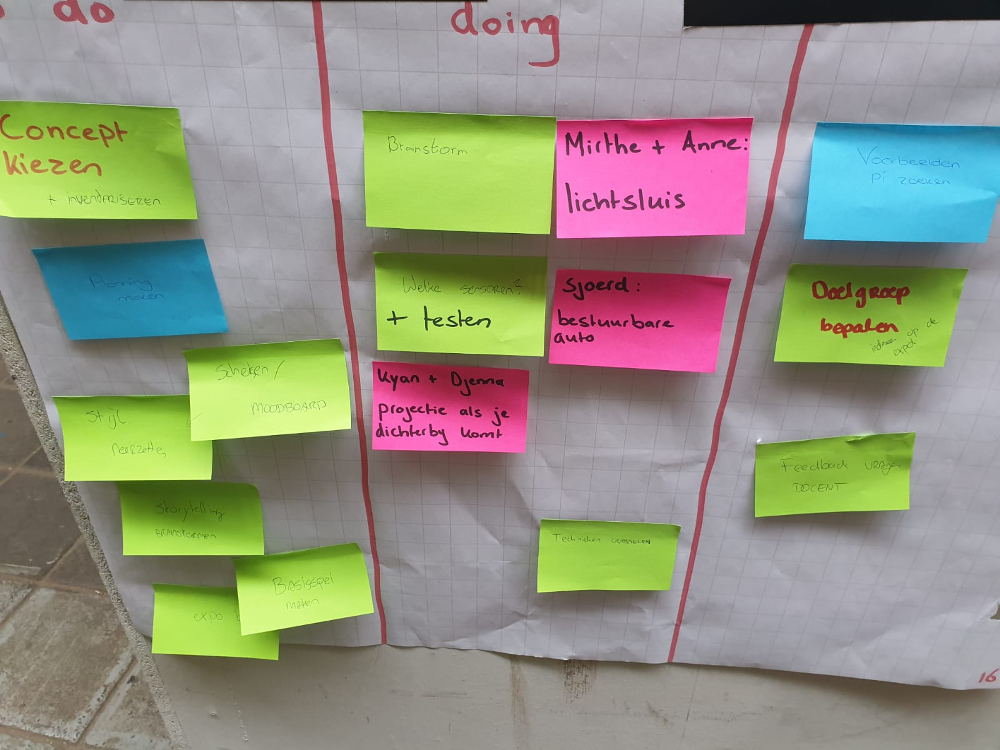

Proces
Dag 1
Op dag 1 zijn de groepen en de onderwerpen bekend gemaakt. Ik heb, gelukkig, geplaats in het onderwerp dat ik als eerste gekozen had, namelijk ‘Playful Interfaces’. Mijn groepje bestaat uit vier Nederlandstalige CMD studenten, uit het tweede en derde jaar, namelijk Mirthe, Anne, Kyan en Sjoerd. Als eerste zijn wij begonnen met een ‘scrum-bord’, waarop de termen ‘to do’, ‘doing’ en ‘done’ op staan. Hiermee weet het hele groepje en de docenten wat wij willen doen, wat wij aan het doen zijn en wat wij gedaan hebben. Met mijn groepje heb ik nagedacht over mogelijke ideeën en concepten die bij het onderwerp Playful Interfaces. Dit was nog best wel lastig, maar wel heel informatief. Wij hebben ook met allerlei technieken getest, zoals een Makey Makey en de Leap Motion. Deze technieken kunnen gebruikt worden bij o.a. Playful Interfaces. Dit gaf ons wel een aantal ideeën, over welke technieken wij zouden kunnen gebruiken en of wij hier concepten bij konden bedenken.
Samen met mijn groepje hebben wij drie concepten kunnen bedenken, alle drie zijn het interactieve spellen. Maar wij willen graag iets maken wat goed gedrag beïnvloed of motiveert, maar dit is nog best lastig hebben we gemerkt.
Dag 2
Dag twee bestond wederom om concepten bedenken en het testen van de middelen die hier aanwezig zijn. Het bedenken van concepten verliep vrij stroef, omdat er geen concept bedacht werd dat iedereen leuk vond of waar iedereen enthousiast van werd. Vervolgens hebben Kyan en ik geprobeerd dingen te bouwen die bij een mogelijk concept zouden passen, zoals het gebruiken van een afstandsmeter in een Arduino. Hiermee kan de afstand tussen het apparaatje en de omgeving gemeten worden en dit kunnen we mogelijk gebruiken bij een uiteindelijk gekozen concept. Dat als iemand dichtbij de sensor komt, dat technologie daarop reageert en er steeds iets anders gebeurt, bijv. iemand laten schrikken als hij langs de sensor loopt.

Doordat ik met verschillende apparaten en technieken ben gaan werken, kon ik afstand nemen van de druk om concepten te bedenken en kwam er toch weer inspiratie naar boven tijdens het uitproberen. Er is in het groepje gewerkt met afstandssensoren, lichtsensoren en projectoren.
Ook kwam Vincent Lindeboom van Next Empire een presentatie geven over zijn werk en al zijn projecten. Ik vond het heel gaaf om te zien hoe iemand uit (ongeveer) de CMD-wereld zo veel verschillende soorten projecten kan doen. Het gaf mij heel veel inspiratie voor concepten van de lab weken, maar ook inspiratie voor wat er allemaal mogelijk is in de toekomst qua werk.
Aan het einde van de dag was ik moe, suf en had ik geen creativiteit meer, dus hadden we als groep besloten om naar de Gamma te gaan en daar te kijken of we op nieuwe concepten zouden kunnen komen. Eenmaal bij de Gamma leek het een apart idee, maar eenmaal in de badkamer afdeling kwam er heel veel inspiratie naar boven. Bij de Gamma hebben we dus een concept bedacht waarbij het een normale, saaie bezigheid zoals naar de wc gaan, leuk en interessant kunnen maken. Verder ga ik nog niks verklappen over het concept … :)
